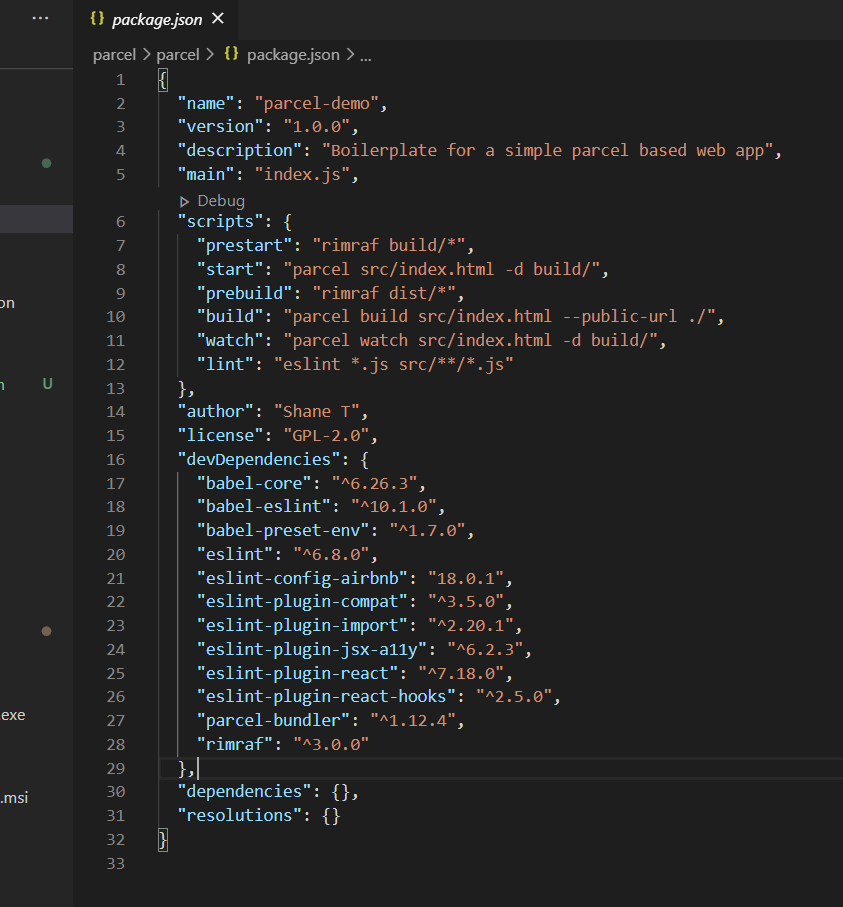
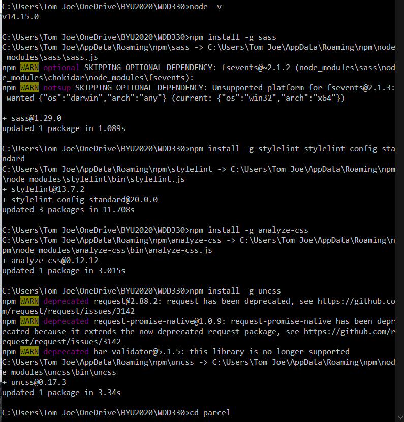

Reading Assignment
Javascript: Novice to ninja (Ch9: The Window Object)
The Browser Object Model (or BOM for short) is a collection of properties and methods that contain information about the browser and computer screen.
If you don't know the name of the global object, you can also refer to it using the keyword this in the global scope. // from within the global scope const global = this;The window.location property is an object that contains information about the URL of the current page. It contains a number of properties that provide information about different fragments of the URL.
The replace() method is almost the same as the assign() method, except the current page will not be stored in the session history, so the user will be unable to navigate back to it using the back button.
The window.screen object contains information about the screen the browser is displayed on.
The write() method simply writes a string of text to the page. If a page has already loaded, it will completely replace the current document.
Cookies are small files that are saved locally on a user’s computer. They were invented by Netscape as a way of getting round HTTP being a stateless protocol.
So every time a user visits a page, nothing about any previous visits is remembered.
To create a cookie, you assign it to JavaScript’s 'cookie jar', using the document.cookie property, like so: document.cookie = 'name=Superman'; "name=Superman"
The window.setTimeout() method accepts a callback to a function as its first parameter and a number of milliseconds as its second parameter.
The setTimeout() and setInterval() methods can be used to animate elements on a web page.
- Quiz Ninja - follow the link
Javascript: Novice to ninja (Ch14: HTML5 APIs)
HTML5 is the latest version of the Hypertext Markup Language used to create web pages.
The HTML5 specification is separated into modules that allow different features to be developed at different paces then implemented without having to wait for other features to be completed.
The data- attribute is a way of embedding data in a web page using custom attributes that are ignored by the browser.
The Web Storage API provides a key-value store on the client’s computer that is similar to using cookies but has fewer restrictions, more storage capacity, and is generally easier to use.
If a browser supports the Web Storage API, the window object will have a property called localStorage, which is a native object with a number of properties and methods used to store data.
The Geolocation API is used to obtain the geographical position of the device. This means it can be used to find the user’s exact location, then link to nearby places or measure the speed at which the user is moving.
The position object also has properties that calculate the accuracy of the measurements.
Gseolocation object has a watchPosition() method that will call a callback function every time the position of the device is updated.
The Notification API allows you to show messages using the system’s notifications. This is usually a popup in the corner of the screen, but it changes depending on the operating system.
The canvas element was introduced to allow graphics to be drawn onto a web page in real time using JavaScript. A canvas element is a rectangular element on the web page.
The fillText() method is used to write text onto the canvas. The first parameter is the text to be displayed, while the next two parameters are the x and y coordinates, respectively.
- Quiz Ninja - follow the link
Managing the moden Front-end workflow
 -
How does HTML5 differ from older HTML standars?